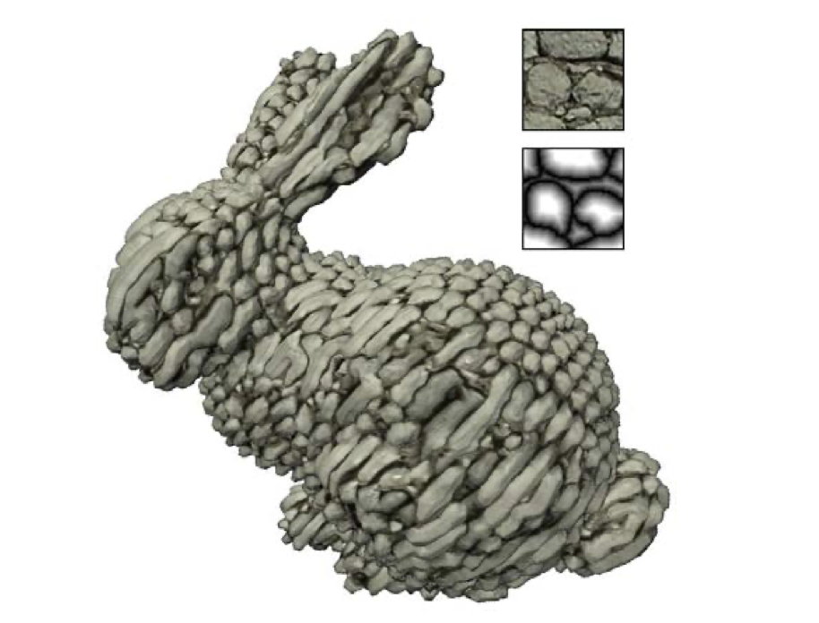

VORTex: Volume Optimization Recovered from Textures
Rohan Mathur, Joy Liu, Anthony Salinas Suarez, Catherine Van Keuren
Summary
We will be mapping 2D textures onto 3D objects in order to give the object a more realistic look. In addition, we are hoping to optimize our mapping function to increase speed up when rendering large objects.
Problem Description
The problem we are trying to solve is that currently based on what we have implemented in class so far, we are unable to map 2D textures onto 3D shapes. This is important because we want objects to have a more photorealistic appearance. In addition, we are hoping to implement some optimizations to make our texture mapper faster than the original paper by utilizing parallelization techniques. To implement texture mapping, we will be following the methods described in the paper titled “Solid Texture Synthesis from 2D Exemplars.” We think that the most challenging parts will be understanding the initial paper and translating the methods into code.
Goals and Deliverables
- Our main goal is to reimplement the paper, which was originally done in C++. We will instead use Python, with the hypothesis that batched PyTorch operations will speed up the optimization process. PyTorch also enables us to switch between different optimization techniques. The deliverables for this part of the project include speed benchmarking, and image comparisons to the original paper. In our analysis, we hope to describe the tradeoff between image quality and optimization time. For instance, the optimization takes a sparse grid of voxels and compares the neighborhood around it to the exemplar, then minimizes the information loss. We can change the sparsity of the grid over optimization to see how that affects image quality. We can also try stochastic gradient descent instead of iteratively reweighted least squares to save time.
- For our aspirational goals, we hope to experiment with different learning objectives. There are several failure cases and limitations described in the original paper. For instance, sometimes there are elongated pebbles, as pictured below. We conjecture that this is due to only optimizing neighborhoods on planar axes. To remedy this, we could sample random directions and enforce that they are also similar to the exemplar texture. We might also look into initial conditions. The deliverable for this part will most likely be more qualitative, with overall loss as an added metric. In our analysis, we will describe how the new objective does in comparison to the old one.
- 
Schedule
- Finalized Project Proposal
- Gather sample textures and 3D objects
- Understand method in Kopf paper
- Finish solid optimization
- Look into different optimization methods other than IRLS for speedup
- Finish histogram matching
- Correct failure cases with novel optimization methods and other experiments
Resources
This is the original paper, as provided in project ideas: Solid Texture Synthesis from 2D Exemplars. There is no code provided, so we will still be implementing everything from scratch.